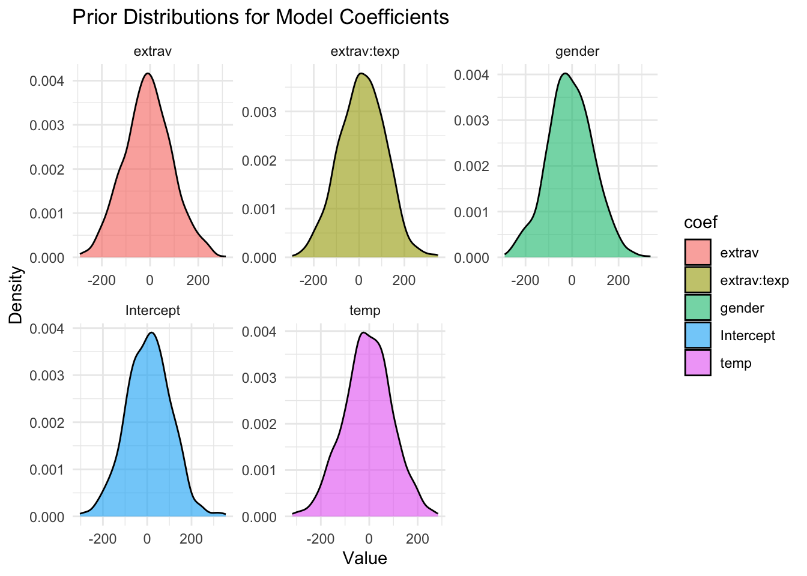
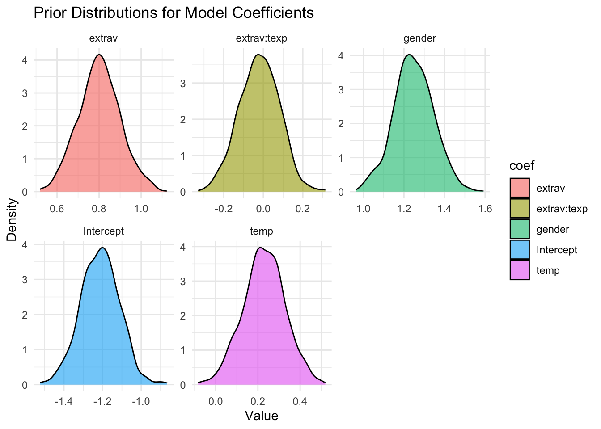
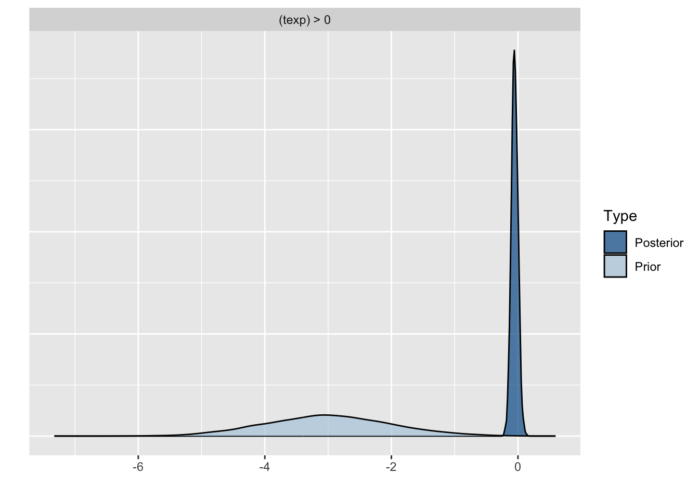
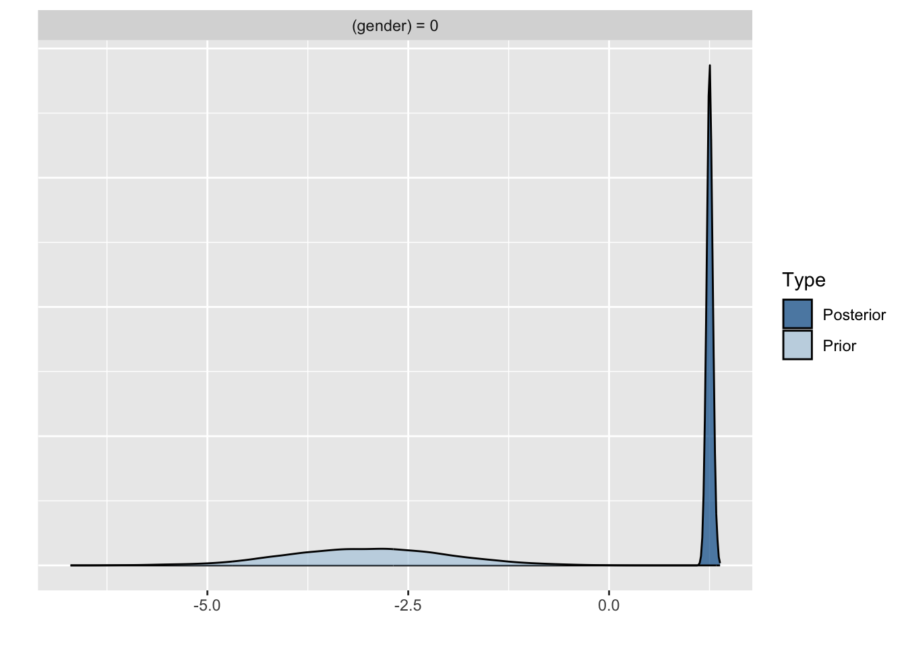
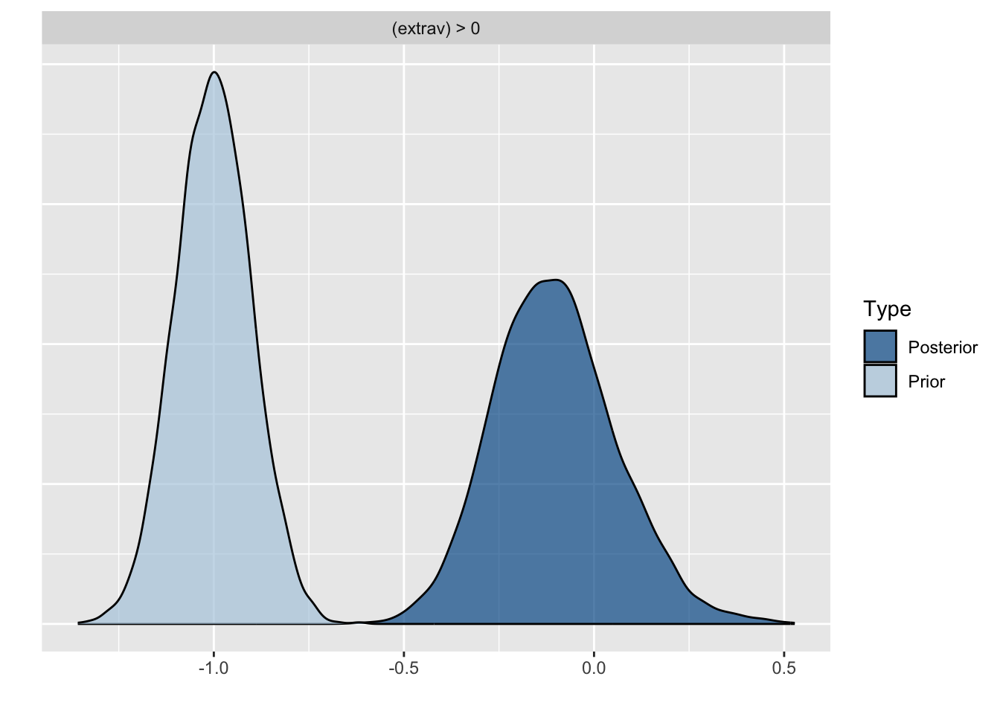
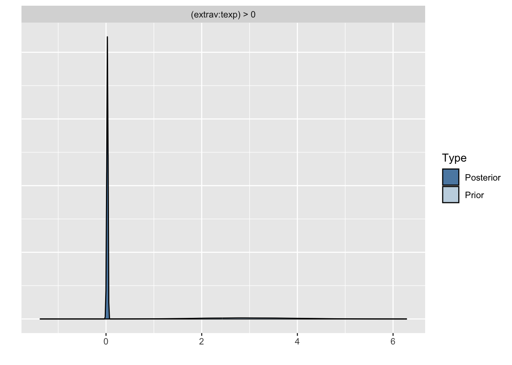
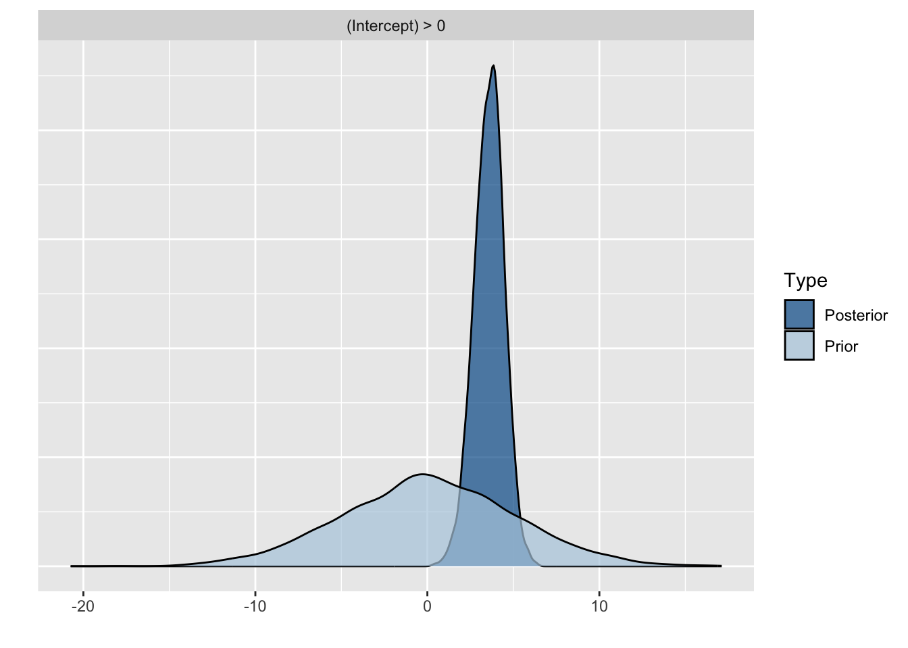
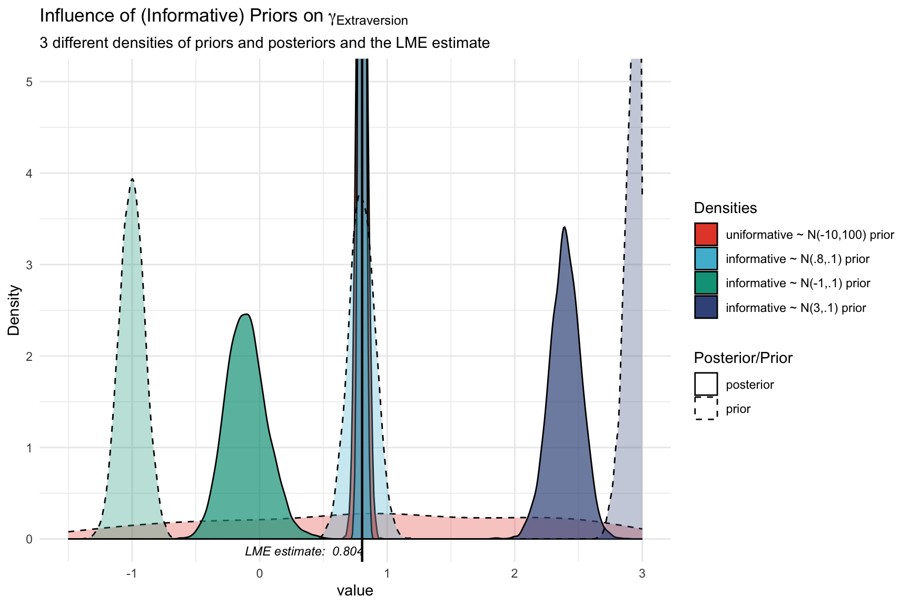

library(haven) # to load the SPSS .sav file
library(tidyverse) # needed for data manipulation.
library(brms) # for the analysis
library(RColorBrewer) # needed for some extra colours in one of the graphs
library(psych)
library(ggmcmc)
library(ggthemes)
library(lme4)
library(modelsummary) # convenient wrappers for model summary tables
library(parameters)Influence of Priors: Popularity Data
Introduction
This is part 2 of a 3 part series on how to do multilevel models in the Bayesian framework. In part 1 we explained how to step by step build the multilevel model we will use here and in part 3 we will look at the influence of different priors.
Preparation
This tutorial expects:
- Basic knowledge of multilevel analyses (first two chapters of the book are sufficient).
- Basic knowledge of coding in R, specifically the lme4 package.
- Basic knowledge of Bayesian Statistics.
- Installation of STAN and Rtools. For more information please see https://github.com/stan-dev/rstan/wiki/RStan-Getting-Started
- Installation of R packages
rstan, andbrms. This tutorial was made using brms version 2.22.0 in R version 4.3.3 - Basic knowledge of Bayesian inference
Priors
As stated in the brms manual: “Prior specifications are flexible and explicitly encourage users to apply prior distributions that actually reflect their beliefs.”
We will set 4 types of extra priors here (in addition to the uninformative prior we have used thus far)
- With an estimate far off the (frequentist) LME value we found in the data with a wide variance (diffuse/non-informative prior)
- With an estimate close to the LME value we found in the data with a small variance (‘plausible’ informative prior 1)
- With an estimate far off the LME value we found in the data with a small variance (‘implausible’ informative prior 2).
- With an estimate far off the LME value we found in the data priors with a small variance (‘implausible’ informative prior 3).
In this tutorial we will only focus on priors for the regression coefficients and not on the error and variance terms, since we are most likely to actually have information on the size and direction of a certain effect and less (but not completely) unlikely to have prior knowledge on the unexplained variances. You might have to play around a little bit with the controls of the brm() function and specifically the adapt_delta and max_treedepth. Thankfully brms will tell you when to do so.
Note
If you just completed the previous tutorial, you can skip Step 1 (setting up packages) and Step 2 (downloading the data) and immediately move on to inspecting the priors.
Step 1: Setting up packages
In order to make the brms package function it need to call on STAN and a C++ compiler. For more information and a tutorial on how to install these please have a look at: https://github.com/stan-dev/rstan/wiki/RStan-Getting-Started and https://cran.r-project.org/bin/windows/Rtools/.
“Because brms is based on Stan, a C++ compiler is required. The program Rtools (available on https://cran.r-project.org/bin/windows/Rtools/) comes with a C++ compiler for Windows. On Mac, you should use Xcode. For further instructions on how to get the compilers running, see the prerequisites section at the RStan-Getting-Started page.” ~ quoted from the BRMS package document
After you have install the aforementioned software you need to load some other R packages. If you have not yet installed all below mentioned packages, you can install them by the command install.packages("NAMEOFPACKAGE")
note. If you are getting the error: Error: .onLoad failed in loadNamespace() for ‘dbplyr’, details: call: setClass(cl, contains = c(prevClass, “VIRTUAL”), where = where) error: error in contained classes (“character”) for class “ident”; class definition removed from ‘dbplyr’ the brms package is loaded before the tidyverse package. Please restart R and load them in the order, tidyverse first brms second.
Step 2: Downloading the data
The popularity dataset contains characteristics of pupils in different classes. The main goal of this tutorial is to find models and test hypotheses about the relation between these characteristics and the popularity of pupils (according to their classmates). To download the popularity data go to https://multilevel-analysis.sites.uu.nl/datasets/ and follow the link to the popularity dataset. After downloading the data to your working directory you can open it with the read_sav() command.
Alternatively, you can directly download them from GitHub into your R workspace using the following command:
popular2data <- read_sav(file ="https://github.com/MirjamMoerbeek/Data_Sets_ML_book/raw/main/popular2.sav")There are some variables in the dataset that we do not use, so we can select the variables we will use and have a look at the first few observations.
popular2data <- select(popular2data, pupil, class, extrav, sex, texp, popular) # we select just the variables we will use
colnames(popular2data) <- c("pupil","class","extrav","gender","texp","popular")
head(popular2data) # we have a look at the first 6 observations# A tibble: 6 × 6
pupil class extrav gender texp popular
<dbl> <dbl> <dbl> <dbl+lbl> <dbl> <dbl>
1 1 1 5 1 [girl] 24 6.3
2 2 1 7 0 [boy] 24 4.9
3 3 1 4 1 [girl] 24 5.3
4 4 1 3 1 [girl] 24 4.7
5 5 1 5 1 [girl] 24 6
6 6 1 4 0 [boy] 24 4.7We can also quickly check the structure of the data to see that we have 2000 pupils in 100 classes.
describe(popular2data) vars n mean sd median trimmed mad min max range skew
pupil 1 2000 10.65 5.97 11.0 10.56 7.41 1 26.0 25.0 0.10
class 2 2000 50.37 29.08 51.0 50.33 37.81 1 100.0 99.0 0.01
extrav 3 2000 5.21 1.26 5.0 5.17 1.48 1 10.0 9.0 0.37
gender 4 2000 0.51 0.50 1.0 0.51 0.00 0 1.0 1.0 -0.02
texp 5 2000 14.26 6.55 15.0 14.40 8.15 2 25.0 23.0 -0.14
popular 6 2000 5.08 1.38 5.1 5.08 1.33 0 9.5 9.5 -0.05
kurtosis se
pupil -1.06 0.13
class -1.22 0.65
extrav 0.66 0.03
gender -2.00 0.01
texp -1.04 0.15
popular -0.06 0.03The Effect of Priors
With the get_prior() command we can see which priors we can specify for this model.
get_prior(popular ~ 0 + Intercept + gender + extrav + texp + extrav:texp + (1 + extrav | class), data = popular2data) prior class coef group resp dpar nlpar lb ub
(flat) b
(flat) b extrav
(flat) b extrav:texp
(flat) b gender
(flat) b Intercept
(flat) b texp
lkj(1) cor
lkj(1) cor class
student_t(3, 0, 2.5) sd 0
student_t(3, 0, 2.5) sd class 0
student_t(3, 0, 2.5) sd extrav class 0
student_t(3, 0, 2.5) sd Intercept class 0
student_t(3, 0, 2.5) sigma 0
source
default
(vectorized)
(vectorized)
(vectorized)
(vectorized)
(vectorized)
default
(vectorized)
default
(vectorized)
(vectorized)
(vectorized)
defaultFor the first model with non-default priors we just set normal priors for all regression coefficients, in reality many, many more prior distributions are possible, see the brms manual for an overview. To place a prior on the fixed intercept, one needs to include 0 + Intercept in the formula syntax. See here for an explanation.
prior1 <- c(set_prior("normal(-10,100)", class = "b", coef = "extrav"),
set_prior("normal(10,100)", class = "b", coef = "extrav:texp"),
set_prior("normal(-5,100)", class = "b", coef = "gender"),
set_prior("normal(-5,100)", class = "b", coef = "texp"),
set_prior("normal(10,100)", class = "b", coef = "Intercept" ))If you want to visualize the prior distributions to get an idea of what expectations about the parameter values they reflect, you can use the following commands:
priors_df <- data.frame(
coef = c("extrav","extrav:texp","gender","temp","Intercept"),
mean = c(-10, 10, -5, -5, 10),
sd = c(100, 100, 100, 100, 100)
)
# simulate values for each prior using rnorm (normal distribution)
set.seed(123)
prior_samples <- priors_df %>%
rowwise() %>%
mutate(value = list(rnorm(1000, mean, sd))) %>%
unnest(cols = c(value))
# plot
ggplot(prior_samples, aes(x = value, fill = coef)) +
geom_density(alpha = 0.6) +
facet_wrap(~ coef, scales = "free") +
theme_minimal() +
labs(title = "Prior Distributions for Model Coefficients",
x = "Value", y = "Density")
model6 <- brm(popular ~ 0 + Intercept + gender + extrav + texp + extrav:texp + (1 + extrav|class),
data = popular2data, warmup = 1000,
iter = 3000, chains = 2,
prior = prior1,
seed = 123, control = list(adapt_delta = 0.97),
cores = 2,
sample_prior = TRUE) # to reach a usuable number effective samples in the posterior distribution of the interaction effect, we need many more iteration. This sampler will take quite some time and you might want to run it with a few less iterations.To see which priors were inserted, use the prior_summary() command
prior_summary(model6) prior class coef group resp dpar nlpar lb ub
(flat) b
normal(-10,100) b extrav
normal(10,100) b extrav:texp
normal(-5,100) b gender
normal(10,100) b Intercept
normal(-5,100) b texp
lkj_corr_cholesky(1) L
lkj_corr_cholesky(1) L class
student_t(3, 0, 2.5) sd 0
student_t(3, 0, 2.5) sd class 0
student_t(3, 0, 2.5) sd extrav class 0
student_t(3, 0, 2.5) sd Intercept class 0
student_t(3, 0, 2.5) sigma 0
source
default
user
user
user
user
user
default
(vectorized)
default
(vectorized)
(vectorized)
(vectorized)
defaultWe can also check the STAN code that is being used to run this model by using the stancode() command, here we also see the priors being implemented. This might help you understand the model a bit more, but it is not necessary to fully understand the generated stan code.
stancode(model6)// generated with brms 2.22.0
functions {
/* compute correlated group-level effects
* Args:
* z: matrix of unscaled group-level effects
* SD: vector of standard deviation parameters
* L: cholesky factor correlation matrix
* Returns:
* matrix of scaled group-level effects
*/
matrix scale_r_cor(matrix z, vector SD, matrix L) {
// r is stored in another dimension order than z
return transpose(diag_pre_multiply(SD, L) * z);
}
}
data {
int<lower=1> N; // total number of observations
vector[N] Y; // response variable
int<lower=1> K; // number of population-level effects
matrix[N, K] X; // population-level design matrix
// data for group-level effects of ID 1
int<lower=1> N_1; // number of grouping levels
int<lower=1> M_1; // number of coefficients per level
array[N] int<lower=1> J_1; // grouping indicator per observation
// group-level predictor values
vector[N] Z_1_1;
vector[N] Z_1_2;
int<lower=1> NC_1; // number of group-level correlations
int prior_only; // should the likelihood be ignored?
}
transformed data {
}
parameters {
vector[K] b; // regression coefficients
real<lower=0> sigma; // dispersion parameter
vector<lower=0>[M_1] sd_1; // group-level standard deviations
matrix[M_1, N_1] z_1; // standardized group-level effects
cholesky_factor_corr[M_1] L_1; // cholesky factor of correlation matrix
}
transformed parameters {
matrix[N_1, M_1] r_1; // actual group-level effects
// using vectors speeds up indexing in loops
vector[N_1] r_1_1;
vector[N_1] r_1_2;
real lprior = 0; // prior contributions to the log posterior
// compute actual group-level effects
r_1 = scale_r_cor(z_1, sd_1, L_1);
r_1_1 = r_1[, 1];
r_1_2 = r_1[, 2];
lprior += normal_lpdf(b[1] | 10,100);
lprior += normal_lpdf(b[2] | -5,100);
lprior += normal_lpdf(b[3] | -10,100);
lprior += normal_lpdf(b[4] | -5,100);
lprior += normal_lpdf(b[5] | 10,100);
lprior += student_t_lpdf(sigma | 3, 0, 2.5)
- 1 * student_t_lccdf(0 | 3, 0, 2.5);
lprior += student_t_lpdf(sd_1 | 3, 0, 2.5)
- 2 * student_t_lccdf(0 | 3, 0, 2.5);
lprior += lkj_corr_cholesky_lpdf(L_1 | 1);
}
model {
// likelihood including constants
if (!prior_only) {
// initialize linear predictor term
vector[N] mu = rep_vector(0.0, N);
for (n in 1:N) {
// add more terms to the linear predictor
mu[n] += r_1_1[J_1[n]] * Z_1_1[n] + r_1_2[J_1[n]] * Z_1_2[n];
}
target += normal_id_glm_lpdf(Y | X, mu, b, sigma);
}
// priors including constants
target += lprior;
target += std_normal_lpdf(to_vector(z_1));
}
generated quantities {
// compute group-level correlations
corr_matrix[M_1] Cor_1 = multiply_lower_tri_self_transpose(L_1);
vector<lower=-1,upper=1>[NC_1] cor_1;
// additionally sample draws from priors
real prior_b__1 = normal_rng(10,100);
real prior_b__2 = normal_rng(-5,100);
real prior_b__3 = normal_rng(-10,100);
real prior_b__4 = normal_rng(-5,100);
real prior_b__5 = normal_rng(10,100);
real prior_sigma = student_t_rng(3,0,2.5);
real prior_sd_1 = student_t_rng(3,0,2.5);
real prior_cor_1 = lkj_corr_rng(M_1,1)[1, 2];
// extract upper diagonal of correlation matrix
for (k in 1:M_1) {
for (j in 1:(k - 1)) {
cor_1[choose(k - 1, 2) + j] = Cor_1[j, k];
}
}
// use rejection sampling for truncated priors
while (prior_sigma < 0) {
prior_sigma = student_t_rng(3,0,2.5);
}
while (prior_sd_1 < 0) {
prior_sd_1 = student_t_rng(3,0,2.5);
}
}After this model with uninformative/diffuse priors, it’s time to do the analysis with informative priors. Three models with different priors are tested and compared to investigate the influence of the construction of priors on the posterior distributions and therefore on the results in general. Note that for the sake of the example, we show various seemingly arbitrary prior settings here. However, remember that in actual research, it is important to make informed decisions and justify the prior settings.
prior2 <- c(set_prior("normal(.8,.1)", class = "b", coef = "extrav"),
set_prior("normal(-.025,.1)", class = "b", coef = "extrav:texp"),
set_prior("normal(1.25,.1)", class = "b", coef = "gender"),
set_prior("normal(.23,.1)", class = "b", coef = "texp"),
set_prior("normal(-1.21,.1)", class = "b", coef = "Intercept" ))
model7 <- brm(popular ~ 0 + Intercept + gender + extrav + texp + extrav:texp + (1 + extrav|class),
data = popular2data, warmup = 1000,
iter = 3000, chains = 2,
prior = prior2,
seed = 123, control = list(adapt_delta = 0.97),
cores = 2,
sample_prior = TRUE)Let’s first again visualize these priors. Notice how different the values on the x-axis are compared to the previous prior distributions.
priors_df <- data.frame(
coef = c("extrav","extrav:texp","gender","temp","Intercept"),
mean = c(.8, -.025, 1.25, .23, -1.21),
sd = c(.1, .1, .1, .1, .1)
)
# simulate values for each prior using rnorm (normal distribution)
set.seed(123)
prior_samples <- priors_df %>%
rowwise() %>%
mutate(value = list(rnorm(1000, mean, sd))) %>%
unnest(cols = c(value))
# plot
ggplot(prior_samples, aes(x = value, fill = coef)) +
geom_density(alpha = 0.6) +
facet_wrap(~ coef, scales = "free") +
theme_minimal() +
labs(title = "Prior Distributions for Model Coefficients",
x = "Value", y = "Density")
summary(model7) Family: gaussian
Links: mu = identity; sigma = identity
Formula: popular ~ 0 + Intercept + gender + extrav + texp + extrav:texp + (1 + extrav | class)
Data: popular2data (Number of observations: 2000)
Draws: 2 chains, each with iter = 3000; warmup = 1000; thin = 1;
total post-warmup draws = 4000
Multilevel Hyperparameters:
~class (Number of levels: 100)
Estimate Est.Error l-95% CI u-95% CI Rhat Bulk_ESS
sd(Intercept) 0.61 0.10 0.44 0.85 1.00 513
sd(extrav) 0.04 0.03 0.00 0.10 1.01 165
cor(Intercept,extrav) -0.36 0.45 -0.94 0.80 1.00 1400
Tail_ESS
sd(Intercept) 1674
sd(extrav) 665
cor(Intercept,extrav) 1163
Regression Coefficients:
Estimate Est.Error l-95% CI u-95% CI Rhat Bulk_ESS Tail_ESS
Intercept -1.21 0.09 -1.38 -1.02 1.00 5046 3344
gender 1.24 0.04 1.17 1.31 1.00 8956 2400
extrav 0.80 0.02 0.76 0.85 1.00 3285 3198
texp 0.23 0.01 0.21 0.24 1.00 3020 3050
extrav:texp -0.02 0.00 -0.03 -0.02 1.00 3780 3558
Further Distributional Parameters:
Estimate Est.Error l-95% CI u-95% CI Rhat Bulk_ESS Tail_ESS
sigma 0.75 0.01 0.72 0.77 1.00 4538 2474
Draws were sampled using sampling(NUTS). For each parameter, Bulk_ESS
and Tail_ESS are effective sample size measures, and Rhat is the potential
scale reduction factor on split chains (at convergence, Rhat = 1).prior3 <- c(set_prior("normal(-1,.1)", class = "b", coef = "extrav"),
set_prior("normal(3, 1)", class = "b", coef = "extrav:texp"),
set_prior("normal(-3,1)", class = "b", coef = "gender"),
set_prior("normal(-3,1)", class = "b", coef = "texp"),
set_prior("normal(0,5)", class = "b", coef = "Intercept" ))
model8 <- brm(popular ~ 0 + Intercept + gender + extrav + texp + extrav:texp + (1 + extrav|class),
data = popular2data, warmup = 1000,
iter = 3000, chains = 2,
prior = prior3,
seed = 123, control = list(adapt_delta = 0.97),
cores = 2,
sample_prior = TRUE)summary(model8) Family: gaussian
Links: mu = identity; sigma = identity
Formula: popular ~ 0 + Intercept + gender + extrav + texp + extrav:texp + (1 + extrav | class)
Data: popular2data (Number of observations: 2000)
Draws: 2 chains, each with iter = 3000; warmup = 1000; thin = 1;
total post-warmup draws = 4000
Multilevel Hyperparameters:
~class (Number of levels: 100)
Estimate Est.Error l-95% CI u-95% CI Rhat Bulk_ESS
sd(Intercept) 2.13 0.38 1.40 2.88 1.01 282
sd(extrav) 0.39 0.07 0.24 0.53 1.01 244
cor(Intercept,extrav) -0.96 0.02 -0.98 -0.92 1.01 293
Tail_ESS
sd(Intercept) 410
sd(extrav) 345
cor(Intercept,extrav) 433
Regression Coefficients:
Estimate Est.Error l-95% CI u-95% CI Rhat Bulk_ESS Tail_ESS
Intercept 3.59 0.87 1.84 5.21 1.01 281 412
gender 1.25 0.04 1.18 1.33 1.00 5164 3049
extrav -0.10 0.16 -0.39 0.23 1.01 254 321
texp -0.05 0.05 -0.15 0.05 1.00 319 437
extrav:texp 0.03 0.01 0.01 0.05 1.01 285 358
Further Distributional Parameters:
Estimate Est.Error l-95% CI u-95% CI Rhat Bulk_ESS Tail_ESS
sigma 0.74 0.01 0.72 0.77 1.00 4346 2996
Draws were sampled using sampling(NUTS). For each parameter, Bulk_ESS
and Tail_ESS are effective sample size measures, and Rhat is the potential
scale reduction factor on split chains (at convergence, Rhat = 1).prior4 <- c(set_prior("normal(3,.1)", class = "b", coef = "extrav"),
set_prior("normal(-3,1)", class = "b", coef = "extrav:texp"),
set_prior("normal(3,1)", class = "b", coef = "gender"),
set_prior("normal(3,1)", class = "b", coef = "texp"),
set_prior("normal(0,5)", class = "b", coef = "Intercept" ))
model9 <- brm(popular ~ 0 + Intercept + gender + extrav + texp + extrav:texp + (1 + extrav|class),
data = popular2data, warmup = 1000,
iter = 3000, chains = 2,
prior = prior4,
seed = 123, control = list(adapt_delta = 0.97),
cores = 2,
sample_prior = TRUE)summary(model9) Family: gaussian
Links: mu = identity; sigma = identity
Formula: popular ~ 0 + Intercept + gender + extrav + texp + extrav:texp + (1 + extrav | class)
Data: popular2data (Number of observations: 2000)
Draws: 2 chains, each with iter = 3000; warmup = 1000; thin = 1;
total post-warmup draws = 4000
Multilevel Hyperparameters:
~class (Number of levels: 100)
Estimate Est.Error l-95% CI u-95% CI Rhat Bulk_ESS
sd(Intercept) 3.47 0.42 2.67 4.33 1.01 208
sd(extrav) 0.67 0.07 0.54 0.82 1.01 379
cor(Intercept,extrav) -0.99 0.00 -0.99 -0.98 1.01 327
Tail_ESS
sd(Intercept) 615
sd(extrav) 863
cor(Intercept,extrav) 711
Regression Coefficients:
Estimate Est.Error l-95% CI u-95% CI Rhat Bulk_ESS Tail_ESS
Intercept -9.41 0.80 -11.01 -7.85 1.01 307 846
gender 1.25 0.04 1.17 1.32 1.00 5991 2985
extrav 2.39 0.12 2.15 2.63 1.00 804 1424
texp 0.70 0.05 0.60 0.80 1.00 226 690
extrav:texp -0.12 0.01 -0.13 -0.10 1.00 330 953
Further Distributional Parameters:
Estimate Est.Error l-95% CI u-95% CI Rhat Bulk_ESS Tail_ESS
sigma 0.74 0.01 0.72 0.77 1.00 5621 2905
Draws were sampled using sampling(NUTS). For each parameter, Bulk_ESS
and Tail_ESS are effective sample size measures, and Rhat is the potential
scale reduction factor on split chains (at convergence, Rhat = 1).Comparing the last three models we see that for the first two models the prior specification does not really have a large influence on the results. However, for the final model with the highly informative priors that are far from the observed data, the priors do influence the posterior results. Because of the fairly large dataset, the priors are unlikely to have a large influence unless they are highly informative.
# Combine all models into a table
modelsummary(
list("Prior: diffuse" = model6, "Prior: informative (1)" = model7,
"Prior: informative (2)" = model8, "Prior: informative (3)" = model9),
statistic = "conf.int",
metrics = "none",
fmt = 2,
output = "gt",
coef_omit = "^(sd_|cor_|Intercept\\[|sigma)" # Regex to omit random effects, group-level terms, etc.
) Registered S3 method overwritten by 'future':
method from
all.equal.connection parallelly| Prior: diffuse | Prior: informative (1) | Prior: informative (2) | Prior: informative (3) | |
|---|---|---|---|---|
| b_Intercept | -1.20 | -1.21 | 3.63 | -9.41 |
| [-1.70, -0.69] | [-1.38, -1.02] | [1.84, 5.21] | [-11.01, -7.85] | |
| b_gender | 1.24 | 1.24 | 1.25 | 1.25 |
| [1.17, 1.31] | [1.17, 1.31] | [1.18, 1.33] | [1.17, 1.32] | |
| b_extrav | 0.80 | 0.80 | -0.11 | 2.40 |
| [0.73, 0.88] | [0.76, 0.85] | [-0.39, 0.23] | [2.15, 2.63] | |
| b_texp | 0.23 | 0.23 | -0.05 | 0.70 |
| [0.19, 0.26] | [0.21, 0.24] | [-0.15, 0.05] | [0.60, 0.80] | |
| b_extrav × texp | -0.02 | -0.02 | 0.03 | -0.12 |
| [-0.03, -0.02] | [-0.03, -0.02] | [0.01, 0.05] | [-0.13, -0.10] |
The table shows how strongly the estimates are affected by the informative priors: in the first two models the estimates are close to each other (and the frequentist estimates), while in the third and fourth model the estimates are pulled towards the prior values. For extraversion, for instance, the effect can become much stronger (informative 3/model 9) or even negative (though the credible interval includes zero; informative 2/model 8). Notably, the credible intervals of the posteriors don’t even overlap with each other.
Because we asked to save the prior in the last model ("sample_prior = TRUE"), we can also plot the difference between the prior and the posterior distribution of different parameters. In all cases, we see that the prior has a large influence on the posterior compared to the posterior estimates we arrived in earlier models.
plot(hypothesis(model8, "texp > 0"))
plot(hypothesis(model8, "gender = 0"))
plot(hypothesis(model8, "extrav > 0"))
plot(hypothesis(model8, "extrav:texp > 0"))
plot(hypothesis(model8, "Intercept > 0"))
Let’s further visualize the influence of the priors on the posterior distributions of the regression coefficient for extraversion. We will plot the prior and posterior distributions of the three models with different priors.
posterior1 <- posterior_samples(model6, pars = "b_extrav")[, c(1,3)]
posterior2 <- posterior_samples(model7, pars = "b_extrav")[, c(1,3)]
posterior3 <- posterior_samples(model8, pars = "b_extrav")[, c(1,3)]
posterior4 <- posterior_samples(model9, pars = "b_extrav")[, c(1,3)]
posterior1.2.3.4 <- bind_rows("prior 1" = gather(posterior1),
"prior 2" = gather(posterior2),
"prior 3" = gather(posterior3),
"prior 4" = gather(posterior4),
.id = "id")
modelLME <- lmer(popular ~ 1 + gender + extrav + texp + extrav:texp + (1 + extrav | class), data = popular2data)
ggplot(data = posterior1.2.3.4,
mapping = aes(x = value,
fill = id,
linetype = key,
alpha = key)) +
geom_density()+
geom_vline(xintercept = summary(modelLME)$coefficients["extrav", "Estimate"], # add the frequentist solution too
size = .8, linetype = 1, col = "black")+
scale_x_continuous(limits = c(-1.5, 3))+
coord_cartesian(ylim = c(0, 5))+
ggsci::scale_fill_npg(name = "Densities", # use the Nature Publishing Group theme, because why not
labels = c("uniformative ~ N(-10,100) prior",
"informative ~ N(.8,.1) prior",
"informative ~ N(-1,.1) prior",
"informative ~ N(3,.1) prior") )+
scale_linetype_manual(name ='Posterior/Prior',
values = c("solid","dashed"),
labels = c("posterior", "prior"))+
scale_alpha_discrete(name = 'Posterior/Prior',
range = c(.7,.3),
labels = c("posterior", "prior"))+
annotate(geom = "text",
x = 0.35, y = -.13,
label = "LME estimate: 0.804",
col = "black",
family = theme_get()$text[["family"]],
size = theme_get()$text[["size"]]/3.5,
fontface="italic")+
labs(title = expression("Influence of (Informative) Priors on" ~ gamma[Extraversion]),
subtitle = "3 different densities of priors and posteriors and the LME estimate")+
ylab("Density") +
theme_minimal()
In this plot we can clearly see how the informative priors pull the posteriors towards them, while the uninformarive prior yields a posterior that is centered around what would be the frequentist (LME4) estimate. The informative prior that centers around the plausible value of 0.8 yields a posterior that is very similar to the one we found with the uninformative prior (and the frequentist estimate), yet slightly more peaked (i.e., more precise). The informative priors yield posteriors that are substantially pulled toward the prior (implausible) values. Note that the y-axis is clipped to enhance visibility of the uninformative prior.
Brms Reference
Original Computing Environment
devtools::session_info()─ Session info ───────────────────────────────────────────────────────────────
setting value
version R version 4.3.3 (2024-02-29)
os macOS 15.5
system aarch64, darwin20
ui X11
language (EN)
collate en_US.UTF-8
ctype en_US.UTF-8
tz Europe/Amsterdam
date 2025-07-20
pandoc 3.1.1 @ /Applications/RStudio.app/Contents/Resources/app/quarto/bin/tools/ (via rmarkdown)
─ Packages ───────────────────────────────────────────────────────────────────
package * version date (UTC) lib source
abind 1.4-8 2024-09-12 [1] CRAN (R 4.3.3)
backports 1.5.0 2024-05-23 [1] CRAN (R 4.3.3)
bayesplot 1.10.0 2022-11-16 [2] CRAN (R 4.3.0)
bayestestR 0.16.0 2025-05-20 [1] CRAN (R 4.3.3)
boot 1.3-29 2024-02-19 [2] CRAN (R 4.3.3)
bridgesampling 1.1-2 2021-04-16 [2] CRAN (R 4.3.0)
brms * 2.22.0 2024-09-23 [1] CRAN (R 4.3.3)
Brobdingnag 1.2-9 2022-10-19 [2] CRAN (R 4.3.0)
broom 1.0.8 2025-03-28 [1] CRAN (R 4.3.3)
cachem 1.1.0 2024-05-16 [1] CRAN (R 4.3.3)
callr 3.7.6 2024-03-25 [1] CRAN (R 4.3.1)
checkmate 2.3.2 2024-07-29 [1] CRAN (R 4.3.3)
cli 3.6.5 2025-04-23 [1] CRAN (R 4.3.3)
coda 0.19-4.1 2024-01-31 [1] CRAN (R 4.3.1)
codetools 0.2-19 2023-02-01 [2] CRAN (R 4.3.3)
colorspace 2.1-1 2024-07-26 [1] CRAN (R 4.3.3)
crayon 1.5.3 2024-06-20 [1] CRAN (R 4.3.3)
curl 6.2.2 2025-03-24 [1] CRAN (R 4.3.3)
data.table 1.17.2 2025-05-12 [1] CRAN (R 4.3.3)
datawizard 1.1.0 2025-05-09 [1] CRAN (R 4.3.3)
devtools 2.4.5 2022-10-11 [2] CRAN (R 4.3.0)
digest 0.6.37 2024-08-19 [1] CRAN (R 4.3.3)
distributional 0.5.0 2024-09-17 [1] CRAN (R 4.3.3)
dplyr * 1.1.4 2023-11-17 [1] CRAN (R 4.3.1)
effectsize 1.0.0 2024-12-10 [1] CRAN (R 4.3.3)
ellipsis 0.3.2 2021-04-29 [2] CRAN (R 4.3.0)
emmeans 1.11.0 2025-03-20 [1] CRAN (R 4.3.3)
estimability 1.5.1 2024-05-12 [1] CRAN (R 4.3.3)
evaluate 1.0.3 2025-01-10 [1] CRAN (R 4.3.3)
farver 2.1.2 2024-05-13 [1] CRAN (R 4.3.3)
fastmap 1.2.0 2024-05-15 [1] CRAN (R 4.3.3)
forcats * 1.0.0 2023-01-29 [2] CRAN (R 4.3.0)
fs 1.6.6 2025-04-12 [1] CRAN (R 4.3.3)
future 1.40.0 2025-04-10 [1] CRAN (R 4.3.3)
future.apply 1.11.3 2024-10-27 [1] CRAN (R 4.3.3)
generics 0.1.4 2025-05-09 [1] CRAN (R 4.3.3)
GGally 2.2.1 2024-02-14 [1] CRAN (R 4.3.1)
ggmcmc * 1.5.1.1 2021-02-10 [1] CRAN (R 4.3.0)
ggplot2 * 3.5.2 2025-04-09 [1] CRAN (R 4.3.3)
ggsci 3.0.0 2023-03-08 [2] CRAN (R 4.3.0)
ggstats 0.7.0 2024-09-22 [1] CRAN (R 4.3.3)
ggthemes * 5.1.0 2024-02-10 [1] CRAN (R 4.3.1)
globals 0.17.0 2025-04-16 [1] CRAN (R 4.3.3)
glue 1.8.0 2024-09-30 [1] CRAN (R 4.3.3)
gridExtra 2.3 2017-09-09 [2] CRAN (R 4.3.0)
gt 0.11.1 2024-10-04 [1] CRAN (R 4.3.3)
gtable 0.3.6 2024-10-25 [1] CRAN (R 4.3.3)
haven * 2.5.3 2023-06-30 [2] CRAN (R 4.3.0)
hms 1.1.3 2023-03-21 [2] CRAN (R 4.3.0)
htmltools 0.5.8.1 2024-04-04 [1] CRAN (R 4.3.1)
htmlwidgets 1.6.4 2023-12-06 [1] CRAN (R 4.3.1)
httpuv 1.6.15 2024-03-26 [1] CRAN (R 4.3.1)
inline 0.3.19 2021-05-31 [2] CRAN (R 4.3.0)
insight 1.3.0 2025-05-20 [1] CRAN (R 4.3.3)
jsonlite 2.0.0 2025-03-27 [1] CRAN (R 4.3.3)
knitr 1.49 2024-11-08 [1] CRAN (R 4.3.3)
labeling 0.4.3 2023-08-29 [1] CRAN (R 4.3.0)
later 1.4.1 2024-11-27 [1] CRAN (R 4.3.3)
lattice 0.22-5 2023-10-24 [2] CRAN (R 4.3.3)
lifecycle 1.0.4 2023-11-07 [1] CRAN (R 4.3.1)
listenv 0.9.1 2024-01-29 [1] CRAN (R 4.3.3)
lme4 * 1.1-37 2025-03-26 [1] CRAN (R 4.3.3)
loo 2.8.0 2024-07-03 [1] CRAN (R 4.3.3)
lubridate * 1.9.2 2023-02-10 [2] CRAN (R 4.3.0)
magrittr 2.0.3 2022-03-30 [2] CRAN (R 4.3.0)
MASS 7.3-60.0.1 2024-01-13 [2] CRAN (R 4.3.3)
Matrix * 1.6-5 2024-01-11 [2] CRAN (R 4.3.3)
matrixStats 1.5.0 2025-01-07 [1] CRAN (R 4.3.3)
memoise 2.0.1 2021-11-26 [2] CRAN (R 4.3.0)
mime 0.13 2025-03-17 [1] CRAN (R 4.3.3)
miniUI 0.1.1.1 2018-05-18 [2] CRAN (R 4.3.0)
minqa 1.2.8 2024-08-17 [1] CRAN (R 4.3.3)
mnormt 2.1.1 2022-09-26 [2] CRAN (R 4.3.0)
modelsummary * 2.3.0 2025-02-02 [1] CRAN (R 4.3.3)
mvtnorm 1.3-3 2025-01-10 [1] CRAN (R 4.3.3)
nlme 3.1-164 2023-11-27 [2] CRAN (R 4.3.3)
nloptr 2.2.1 2025-03-17 [1] CRAN (R 4.3.3)
parallelly 1.45.0 2025-06-02 [1] CRAN (R 4.3.3)
parameters * 0.26.0 2025-05-22 [1] CRAN (R 4.3.3)
pillar 1.11.0 2025-07-04 [1] CRAN (R 4.3.3)
pkgbuild 1.4.7 2025-03-24 [1] CRAN (R 4.3.3)
pkgconfig 2.0.3 2019-09-22 [2] CRAN (R 4.3.0)
pkgload 1.4.0 2024-06-28 [1] CRAN (R 4.3.3)
plyr 1.8.9 2023-10-02 [1] CRAN (R 4.3.1)
posterior 1.6.1 2025-02-27 [1] CRAN (R 4.3.3)
processx 3.8.6 2025-02-21 [1] CRAN (R 4.3.3)
profvis 0.3.8 2023-05-02 [2] CRAN (R 4.3.0)
promises 1.3.2 2024-11-28 [1] CRAN (R 4.3.3)
ps 1.9.1 2025-04-12 [1] CRAN (R 4.3.3)
psych * 2.4.12 2024-12-23 [1] CRAN (R 4.3.3)
purrr * 1.0.4 2025-02-05 [1] CRAN (R 4.3.3)
QuickJSR 1.3.1 2024-07-14 [2] CRAN (R 4.3.3)
R6 2.6.1 2025-02-15 [1] CRAN (R 4.3.3)
rbibutils 2.3 2024-10-04 [1] CRAN (R 4.3.3)
RColorBrewer * 1.1-3 2022-04-03 [2] CRAN (R 4.3.0)
Rcpp * 1.0.14 2025-01-12 [1] CRAN (R 4.3.3)
RcppParallel 5.1.7 2023-02-27 [2] CRAN (R 4.3.0)
Rdpack 2.6.4 2025-04-09 [1] CRAN (R 4.3.3)
readr * 2.1.4 2023-02-10 [2] CRAN (R 4.3.0)
reformulas 0.4.1 2025-04-30 [1] CRAN (R 4.3.3)
remotes 2.5.0 2024-03-17 [1] CRAN (R 4.3.1)
reshape2 1.4.4 2020-04-09 [2] CRAN (R 4.3.0)
rlang 1.1.6 2025-04-11 [1] CRAN (R 4.3.3)
rmarkdown 2.29 2024-11-04 [1] CRAN (R 4.3.3)
rstan 2.32.6 2024-03-05 [2] CRAN (R 4.3.1)
rstantools 2.3.1.1 2023-07-18 [2] CRAN (R 4.3.0)
rstudioapi 0.17.1 2024-10-22 [1] CRAN (R 4.3.3)
sass 0.4.9 2024-03-15 [1] CRAN (R 4.3.1)
scales 1.4.0 2025-04-24 [1] CRAN (R 4.3.3)
sessioninfo 1.2.2 2021-12-06 [2] CRAN (R 4.3.0)
shiny 1.9.1 2024-08-01 [1] CRAN (R 4.3.3)
StanHeaders 2.32.10 2024-07-15 [1] CRAN (R 4.3.3)
stringi 1.8.7 2025-03-27 [1] CRAN (R 4.3.3)
stringr * 1.5.1 2023-11-14 [1] CRAN (R 4.3.1)
tables 0.9.31 2024-08-29 [1] CRAN (R 4.3.3)
tensorA 0.36.2.1 2023-12-13 [1] CRAN (R 4.3.1)
tibble * 3.3.0 2025-06-08 [1] CRAN (R 4.3.3)
tidyr * 1.3.1 2024-01-24 [1] CRAN (R 4.3.1)
tidyselect 1.2.1 2024-03-11 [1] CRAN (R 4.3.1)
tidyverse * 2.0.0 2023-02-22 [1] CRAN (R 4.3.0)
timechange 0.2.0 2023-01-11 [2] CRAN (R 4.3.0)
tzdb 0.4.0 2023-05-12 [2] CRAN (R 4.3.0)
urlchecker 1.0.1 2021-11-30 [2] CRAN (R 4.3.0)
usethis 2.2.2 2023-07-06 [2] CRAN (R 4.3.0)
utf8 1.2.6 2025-06-08 [1] CRAN (R 4.3.3)
V8 6.0.0 2024-10-12 [1] CRAN (R 4.3.3)
vctrs 0.6.5 2023-12-01 [1] CRAN (R 4.3.1)
withr 3.0.2 2024-10-28 [1] CRAN (R 4.3.3)
xfun 0.49 2024-10-31 [1] CRAN (R 4.3.3)
xml2 1.3.8 2025-03-14 [1] CRAN (R 4.3.3)
xtable 1.8-4 2019-04-21 [2] CRAN (R 4.3.0)
yaml 2.3.10 2024-07-26 [1] CRAN (R 4.3.3)
[1] /Users/3659690/Library/R/arm64/4.3/library
[2] /Library/Frameworks/R.framework/Versions/4.3-arm64/Resources/library
──────────────────────────────────────────────────────────────────────────────